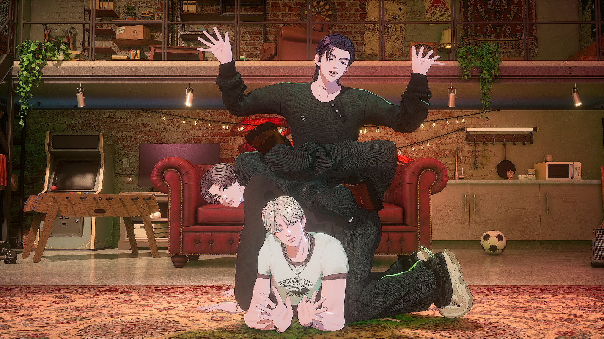

PLAVE分類：YOUTUBE直播日期：2026-10-21—【完整版】PLLI 抓緊囉！✨PLAVE✨ 全速抵達星夜🏁｜金伊娜的星光燦爛的夜晚PLAVE 字幕最後更新：2026-10-24在 YouTube 觀看原始影片×載入 YouTube 播放器 1010速度 0.75×1×1.25×1.5×2×00:00 / --:-- 繁中韓文雙語字幕大小20%字幕位置 原先位置懸浮字幕全螢幕劇院模式字幕外觀字幕樣式白字／黑底黑字／白底黃字／黑底白字描邊／無底底色透明度25%字幕高度2%恢復預設繁體中文點播放後，字幕會顯示在這裡韓文 分享這篇@fLINE𝕏 — 人喜歡這篇 這篇字幕對你有幫助嗎？ 0.0選擇 1～5 星 平均評分載入中展開雙語逐字稿 點擊查看完整內容雙語逐字稿雙語韓文繁中 自動跟隨播放文字大小 A−A＋重設字幕偏移（秒） 字幕比聲音早出現時填正數00:01:24FM 91.9MHz MBC FM4U입니다 HLKV-FMFM 91.9 MHz MBC FM4U 呼號 HLKV-FM00:01:30행복한 세상에 좋은 친구 MBC幸福世界的好朋友 MBC00:01:36문화 방송. 오늘도 당신편 MBC FM에서 8시를文化廣播 今天也站在你這邊的 MBC FM00:01:42알려 드립니다.為您報時 現在是晚上八點00:02:38카레이싱은 제한된 시간과賽車是在限定的時間00:02:41규칙에서 차량의 성능을 최대한으로和規則之下 將車輛性能發揮到極致00:02:44끌어올려 가장 먼저 결승점을 통과하는 경기입니다爭取第一個通過終點的競賽00:02:49기술과 순발력 상황 대처 능력이 골고루 필요한데요需要兼具技術 瞬間反應力 以及應變能力00:02:54올해 열린 국내 최대 모터스포츠 대회 주요 부문에서 1위를今年舉辦的韓國最大規模賽車賽事中 在主要組別拿下冠軍的00:02:59차지한 주인공은 열일곱 살 고등학생 김한이 선수였습니다是一名 17 歲高中生 金韓伊選手00:03:05영화 F1을 보며 엔진 소리에 심장이 뜨겁게 울렸고 드라이버가他看電影《F1》時 聽著引擎聲 心臟熱血沸騰00:03:11되겠다는 자신의 포부를 부모님께 프레젠테이션해서 설득한 다음 일 년便向父母做簡報 說服他們支持自己成為賽車手的志向00:03:16정도 시뮬레이션 훈련에 매진했다는데요.接著投入了大約一年的模擬訓練00:03:20열 번의 실전 운전 후에 출전한 첫 대회에서 챔피언에 오른 겁니다.實際駕駛十次之後 首次參賽就拿下了冠軍00:03:32꿈을 향한 열정과 추진력, 그리고 자신을 향한 피드백을 열린對夢想的熱情和行動力 以及願意敞開心胸00:03:37마음으로 수용한 점까지 놀랍고도 빠른 성장에는 그만한 이유가 있었더라고요.接受別人回饋的態度 驚人的快速成長 果然有它的原因00:03:46여기는 김이나의這裡是金伊娜的00:03:52별이 빛나는 밤에《星光燦爛的夜晚》00:07:01시월 이십일 수요일 김이나의 별이 빛나는 밤에 첫 곡은 영화 F1 더 무비10 月 21 日星期三 《金伊娜的星光燦爛的夜晚》第一首歌00:07:06OST 에드 시런 Drive였습니다 강민지 님이요 와 열정이是電影《F1》的原聲帶 Ed Sheeran 的《Drive》 姜旻智說00:07:13대단하네요라고 보내 주셨고 9898님 열일곱이요哇 好有熱情 9898 說 17 歲嗎?00:07:18난 열일곱 때 뭐 했더라라고 보내 주셨어요 이렇게 남다른我 17 歲的時候在做什麼呢? 有時候這種與眾不同的00:07:24인물들이 가끔 우리에게 기분 좋은 경이를 느끼게 하는 것 같아요 별밤人 會帶給我們愉快的驚嘆 剛剛節目開場有提到00:07:30오프닝에서 얘기했죠 이천이십육 슈퍼레이스 GT4 클래스 챔피언에2026 年 Superrace GT4 組別冠軍00:07:36무려 17살 고등학생 김한이 선수가 올랐었다고. 그리고 앞으로도 세계竟然是 17 歲高中生金韓伊 而且他還表明了00:07:43무대에 진출하겠다라는 포부를 밝혔다고 합니다. 영화 하나에 어 심장이未來要進軍世界舞台的志向 只因一部電影 就讓心中00:07:49타올라서 근데 물론 학생 때 당연히燃起了熱情 當然學生時代00:07:54카레이싱 영화 보면 누구를 막론하고 너무看到賽車電影 不管是誰都會覺得00:07:58멋있는 업이라고 생각할걸요. 근데 그게 진짜로 구현이 되려면은這真是個很帥的職業 但真要實現它的時候00:08:04어 그 아주 처음 발걸음에서부터 아 이거는 함부로 도전할 수 있는 꿈이可能從踏出第一步起 就會覺得這個夢想00:08:10아니구나 하면서 좌절할 수가 있는데 진짜 단단하게 알맹이가 꽉찬不是隨便就能挑戰的 然後受挫 看來他擁有的是一個非常堅定00:08:14꿈이었었나 봅니다 그리고 물론 재능의 영역도 있었겠지만 그걸而且充實的夢想 當然也跟天分有關00:08:19이렇게 일찍감치 스스로가 어 좀 느낀게 아닌가 싶어요. 내가但他似乎很早 就感受到自己的這份特質00:08:24어떤 뭔가 그런 자체를 컨트롤하고 스피드에 있어서 좀 스릴을 즐길 줄自己是能夠駕馭車輛 懂得享受速度帶來的00:08:31아는 사람이고 그렇다라는 거 어떤 기분이었을까요? 진짜 빠른 속도인 거刺激感的人 那會是什麼感覺呢? 真的發展得非常快00:08:36같은데 오늘의 별밤도 숨 가쁘게 달려갈 예정이에요 아무래도 우리가 이今天的節目也準備一路狂奔 畢竟我們從賽車話題00:08:43레이싱 얘기로 시작을 했고 어 오프닝 노래도 드라이브였고開始 開場曲也是《Drive》00:08:49오늘 1 2부에서요. 새 앨범으로 컴백한 이제는 별밤과 꽤 친하다라고今天第一 二部 要和帶著新專輯回歸 現在應該可以說和節目00:08:55할 수 있지 않을까 싶은 외계 청년들이죠 플레이브와 별밤 초대석相當熟悉的外星青年們 PLAVE 一起進行星夜邀請席00:09:01함께합니다. 3 4부에는 데이브레이크 이원석 씨와第三 四部則會與 DAYBREAK 的李元碩00:09:04선곡 대결 벌일 거고요 영업합니다 시즌 사죠 이따 아홉 시부터 부엉이도進行選曲對決 是推坑時間第四季 稍後九點開始00:09:09투표 받을 거예요 오늘 아주 꽉 찼습니다 광고 듣고 바로 플레이브也會開放貓頭鷹聽眾投票 今天內容非常充實 聽完廣告就請00:09:14다섯 분 모실테니까 궁금한 점 하고 싶은 얘기 단문 50원 장문 100원PLAVE 五位出場 有問題或想說的話 請傳簡訊 短訊息 50 韓元 長訊息 100 韓元00:09:18되는 문자 샵 8,000번이나 무료인 스마트라디오 미니로 보내 주세요.傳到 #8000 或使用免費的智慧電台 mini00:11:14김이나의 별이 빛나는 밤에《金伊娜的星光燦爛的夜晚》00:14:18플레이브의 스타 트레이스 먼저 일단 들었어요. 5131님이요. 커리어先聽了 PLAVE 的《Star Trace》 5131 說 恭喜事業再創00:14:23하이 축하합니다. 플레이브 최고라고 보내 주셨어요. 자, 이제 별밤高峰 PLAVE 最棒了 現在就來星夜00:14:28초대에서 플레이브 모셔 보겠습니다.邀請席 請 PLAVE 出場00:14:50외계에서 온 이분들은 외계에서 왔기 때문에 뭐든 할 수 있고 뭐든 될 수這些來自外星的人們 正因為來自外星 所以什麼都能做 什麼都能成為00:14:55있습니다 오늘 별밤 초대석은 궤적을 그리며 마음껏 질주할 버추얼 그룹今天星夜邀請席 要與畫下軌跡 盡情奔馳的虛擬團體00:15:01플레이브와 함께할게요.PLAVE 一起00:15:07- 플레이브 여러분 어서 오세요 - 와- PLAVE 歡迎你們 - 哇!00:15:10안녕하세요. 안녕하세요. 오랜만에 뵙겠습니다.大家好 大家好 好久不見00:15:14아, 여러분들 여전히 시끌 벅적하군요.你們還是一樣熱熱鬧鬧呢00:15:17자, 먼저 단체 인사 좀 부탁드리겠습니다.首先請一起打個招呼00:15:20- 네 안녕하세요 우리는 플레이브입니다 - 환영합니다- 大家好 我們是 PLAVE! - 歡迎00:15:25자, 지금 스마트 라디오 미니 그리고 유튜브 채널 아이돌 라디오 유니버스로現在打開智慧電台 mini 或 YouTube 頻道 Idol Radio Universe00:15:28들어오시면 플레이브 목소리 들으실 수 있어요. 오늘은 보라는 아니고 보이스就能聽到 PLAVE 的聲音 今天沒有可視影像00:15:32온리로 진행이 됩니다. 자, 이제 한 분씩 인사 부탁드릴게요. 예준會以純聲音方式進行 接著請各位一一打招呼00:15:37- 씨부터 - 네 안녕하세요- 先從藝俊開始 - 大家好00:15:41예준입니다 반갑습니다我是藝俊 很高興見到大家00:15:44네. 안녕하세요. 노아입니다. 반갑습니다.大家好 我是諾亞 很高興見到大家00:15:47뭐야? 왜 안 해요?怎麼了? 你怎麼沒做?00:15:49해요我現在做00:16:00안녕하세요 밤비입니다大家好 我是斑比00:16:06- 안녕하세요 은호입니다 - 숨이 막힌다고- 大家好 我是銀虎 - 喘不過氣了00:16:12안녕하세요. 하민입니다. 아大家好 我是河玟00:16:18진짜 다시 그날에 기억이 새록새록 떠오르는데요.那天的記憶 又一點一點浮現了00:16:23지금 한 소절씩 살짝 맛보여 주신 게 저도 이제 드디어你們剛剛各自稍微表演了一小段 我終於也00:16:29콘서트장을 찾아갔었는데親自去演唱會現場了00:16:34아 인천 문학 경기장에서 시작해 가지고 이제 월드 투어 지금도 진행從仁川文鶴競技場開始 現在世界巡迴也還在00:16:39- 중이시죠 - 네 맞습니다- 進行中 對吧? - 沒錯00:16:43그 충격을 다시는 잊을 수 없는 어떤 기억으로那個衝擊 真的成了 我再也忘不了的一段記憶00:16:48지금 각인이 돼서 저는 이제 처음 본 거란 말이에요.深深刻在心裡 因為我可是第一次親眼看00:16:522939님이 이번 콘서트 이나 님도 가신 걸로 알고 있어요 예준 님2939 說 聽說伊娜也去了這次演唱會 藝俊的00:16:55솔로곡이 별밤에서 한 소절 불러 줬던 곡인데 진짜 그걸 불러서 의도하신個人歌曲 是之前在節目唱過一小段的歌 結果真的在演唱會上唱了00:16:59건지 아니면 원래 부를 예정이었는지 궁금해 하셨는데 카펜터스에想知道是刻意安排 還是原本就打算唱這首歌 Carpenters 的00:17:04클로즈 투 유 예준 님 그리고 진짜 나 그날 거기서 혼자 소리 질렀잖아 별밤《Close to You》 藝俊 那天我真的一個人尖叫了00:17:08언급돼 가지고 못 살아因為你提到了節目 真受不了00:17:11- 영광입니다 감사합니다 - 살짝 스포를- 真的很榮幸 謝謝 - 所以你其實有稍微00:17:16- 좀 해 주신 거죠 예준 씨 - 그렇죠 제가 별밤에서 처음으로 저와- 劇透了一下 對吧 藝俊? - 沒錯 我第一次在這個節目00:17:21그리고 선배님만 아는 그런 스포를 했네요.給了只有我和前輩知道的劇透00:17:25오 마이 갓 멘트할 때 갑자기 김이나 하면서 내天啊 你致詞時突然喊了金伊娜 出現我的名字00:17:29이름이 나 혼자서 화들짝 놀라 가지고我一個人嚇了一大跳00:17:33제 옆자리가 이적 선배님이에요.坐在我旁邊的 就是李笛前輩00:17:36- 아 진짜요 - 따님이랑 같이 오셨는데 노래를 줄줄이 다 외우시더라고요- 真的嗎? - 他是跟女兒一起來的 每首歌都記得一清二楚00:17:41몇 번째 이미 다회차 관람 중이시고已經不是第一次看 是看過好幾場的人了00:17:45아 오히려 저한테 막 설명을 해 주시고反而一直跟我解說00:17:47와 너무 어 그런 지경이었습니다. 아무튼 우리就是到了這個程度 總之在你們來之前00:17:51플레이브랑 좀 친한 사이라고 제가 좀 오시기 전에 얘기했는데我說我跟 PLAVE 算是很熟 應該也不算說錯吧00:17:56- 너무 틀린 말은 아니죠 - 아니죠 아니죠- 這話不算錯吧? - 當然 當然00:18:00아주 뭐 두 번째 아 세 번째군요 저희가 또 이제第二次 不 是第三次了呢 我們現在也00:18:04지드래곤에이어서 플레이브와도 아주 절친인 걸로 일단 선언해 보도록繼 G-DRAGON 之後 先宣布我跟 PLAVE 也是好朋友00:18:08하겠고요. 자, 그리고 진짜 제가 그날 보면서而且那天看演唱會時 我真的覺得00:18:12와, 이거 나중에 언제 플레이브가 올지 모르겠지만雖然不知道 PLAVE 下次什麼時候會來00:18:16다 막 언급해야지 하면서 메모를 어이但這些一定都要提一下 所以一邊看00:18:19무대를 보면서 해 가지고 오늘 그 메모를 봤는데 무슨 얘기야表演一邊做筆記 可是今天再看那些筆記 就覺得這寫什麼?00:18:27너무 극도의 흥분 상태로 썼던 거예요 그러니까 진짜因為我是在極度興奮的狀態下 寫下來的 你們真的00:18:32이제 여러분들은 특수 능력이 있기 때문에 의상 체인지라든지 그런게因為有特殊能力 像是換衣服之類的00:18:36순간순간 무대 체인지부터 모든 게 너무 순식간에 이루어지잖아요還有舞台轉換 一切都在瞬間完成00:18:42그죠? 그리고 무엇보다 모든 그 무대가 고자극 투성이었지만 커버對吧? 而且每個表演 都讓人非常興奮 但翻唱00:18:48무대는 정말 상상을 초월한 여러분들이 다 지독하고舞台真的超出想像 你們每個人都太狠了00:18:52지독하고 좀 나빴다太狠了 有點壞00:18:54나빴다 여러분들 다 좀 조금씩 각자 나쁜你們每個人 都有一點壞的地方00:18:57부분이 있었어요. 아各自都有00:18:59예준 씨는 가장 마일드하다고 할 수 있죠 커버 곡 중에서翻唱曲目裡 藝俊應該算是最溫和的了00:19:03클로즈 투 유 이제 약간 헤어스타일이唱《Close to You》 髮型有點00:19:07앞머리 또 이마를 싹 드러내는 거죠把瀏海全部撥開 露出額頭的那種00:19:11차 같은 거還坐在車上00:19:14타고 막 안 무서웠나요?坐著到處跑 不會害怕嗎?00:19:17- 이게 연습을 많이 하다 보니까 - 그때부터 이제 좀 뭔가- 因為練習很多次了 - 原來從那時候開始00:19:21- 주행하는 것에 몸을 익히고 계셨구나 - 네- 就在讓身體熟悉駕駛了 - 對00:19:26되게 말랑말랑해지고 있었는데 갑자기 은호 씨가真的很帥 心都變得軟綿綿了 結果銀虎突然00:19:32은호 씨는 좀 왜 그 욕조를銀虎 那個浴缸是怎麼回事?00:19:36네 제가 평소에 반신욕도 워낙 많이對 我平常就很喜歡00:19:41- 좋아하는데 - 진짜 못 봤는데- 泡半身浴 - 我倒是沒看過00:19:43왜 형이 볼 수는 없죠哥怎麼可能看得到?00:19:47- 그 말도 이상하네 - 그게 오히려 더 이상하긴 하네요- 那句話也很奇怪 - 那樣反而更奇怪00:19:51맞긴 해.네 네.確實是 沒錯00:19:53네. 제가 반신욕을 좀 즐기는데 반신욕하다가 갑자기 생각이 떠올랐어.我很喜歡泡半身浴 有一次泡的時候突然想到00:19:58솔로 무대에 대한 고민이 많았어요 이 뜨끈한 물에 몸을 지지면서當時一直在苦惱個人舞台 身體泡在熱呼呼的水裡00:20:03이제 아, 어떻게 무대를 꾸밀까? 아, 욕조에 들어가야 되겠다.想著要怎麼設計舞台 突然覺得 乾脆泡進浴缸好了00:20:08그럼 좀 섹시해 보이지 않을까라는 아이디어가 떠올라서 욕조에應該會看起來比較性感吧 就有了這個點子 在浴缸裡00:20:13아주 못되게 입술 자국 네 맞아요 나중에 그게 그래도 여차저차 해명이還很壞心地弄了唇印 沒錯 雖然後來總算00:20:19되긴 했지만 아이고 이분들 아주 해맑게 봤더니만 굉장한데 했는데有解釋清楚 我原本以為你們很純真 沒想到這麼厲害00:20:25거기서 다가 아니었어요 믿었던 하민 씨結果還不只如此 還有原本很信任的河玟00:20:30스파이더 아주 고자극 뒤에 아니 단추를《Spider》 一波又一波的刺激 而且那個扣子00:20:35어디까지 푸셨나요到底解到哪裡了?00:20:40맨발로 아 맨발에 바닥 쓸고 그리고 한 손만赤腳在地板上滑動 而且只有一隻手00:20:44장갑 끼고 막 이랬던게 어 요소들이 너무 훌륭했어요. 지금은 저거 봐.戴著手套 那些元素真的太棒了 你們現在看他00:20:48지금 또 여러분들 보십시오. 지금 또 쑥스러워 가지고 지금 책상만 쳐다보고大家看看 現在又因為害羞00:20:53- 하는데 - 콘셉트인데- 只顧著盯著桌子 - 那是概念啦00:20:55되게 지금 청순한 척하시는데 제가 다 봤어요現在假裝得很清純 但我全都看到了00:20:58- 저희 본모습을 보셨군요 - 명치를 다 드러내고 얼굴이- 原來你看到我們的真面目了 - 連上腹都露出來 臉都00:21:02- 밤비 색이 됐는데요 - 그러네 그러네- 變成斑比色了 - 真的耶 真的00:21:05- 부끄럽네요 - 여러분도 역시 또 여기 오니까- 有點害羞 - 果然回到這裡之後00:21:08그때 진짜 무슨 짓을 하신 건지 설명을 한마디도 못 해 주고也沒辦法解釋 當時到底做了什麼00:21:12계십니다 노아 씨도 지금 웃을 때가 아니에요諾亞 現在可不是你笑的時候00:21:15아니, 그래서 어머, 어머, 어떤那時候我還在想 天啊00:21:18단추 어디까지 푼 거 했는데 그것보다 더 센 캐릭터로扣子到底解到哪裡 結果又有一個更強烈的角色出場00:21:24흡혈귀가 되면서 센 캐릭터 등장부터 환호성이變成了吸血鬼 強烈的角色 一出場就00:21:28어마어마했어요. 음.引起了驚人的歡呼聲00:21:30아, 좀 얘기 좀 해 주세요. 여러분들 왜 이렇게 뭐 왜 이렇게 다你們也說點什麼吧 為什麼每個人都這麼00:21:33독해요?狠啊?00:21:36- 아니 그 아이디어들 뭐냐고요 - 아무래도 이제 또 혼자 무대를 채워야- 到底怎麼想到那些點子? - 畢竟要一個人撐起舞台00:21:41된다는 그 부담감 있잖아요. 그래서 더 잘해야 된다는 압박이 있어會有壓力 也因為覺得一定要表現得更好00:21:45가지고 각자 자기 필살기를 다 갖고 온 거所以每個人都拿出了自己的必殺技00:21:48같아. 난리 났더라고. 진짜 필살기 필살기真的不得了 每個人都拿出必殺技00:21:51하다가 결국에 밤비가 아結果最後斑比竟然00:21:54무려 솔로로 셜록을 해 버리는데 맞습니다一個人表演了《Sherlock》00:21:58해 버리는데 역시就這樣做到了 果然00:22:01진짜이 춤캐 야 그거 혼자 근데 소화하기가真的是舞蹈擔當 但要一個人完成那個表演00:22:06- 솔직히 연습하면서 후회한 적 없나요 - 매일매일이 후회였고요- 老實說 練習時沒後悔過嗎? - 每一天都在後悔00:22:11- 고통이었죠 - 전까지- 很痛苦吧? - 直到上台前00:22:13- 후회였다가 어쩔 수 없이 했습니다 - 여러분들 여기서는 또 청순 캐릭터로- 都很後悔 但還是硬著頭皮做了 - 雖然你們回到這裡又變成清純派00:22:19돌아오셨지만은 제 무대 위에서 그 못된 모습 영원히 기억할 것입니다.但你們在舞台上的壞樣子 我會永遠記住00:22:23김현주 님이요 이나 님 마음 내 마음 고자극 도파밍 콘서트 많은 사람들을金賢珠說 伊娜的心情就是我的心情 高度刺激 多巴胺滿滿的演唱會00:22:28문학에 가둬 놨잖아요把好多人都困在文鶴競技場了00:22:31그래서 여러분들 때문에 제 도파민 체계가 그때 좀 고장이 나서 실제로因為你們 我的多巴胺系統 那時候有點故障 所以現在00:22:35- 별밤에 매주 월요일마다 도파민 치유의 밤을 갖고 있어요 - 진짜요- 節目每週一都在進行多巴胺療癒之夜 - 真的嗎?00:22:40플레이브 때문이에요. 진짜 여러분들 나중에 시간 나면 월요일 코너 좀就是因為 PLAVE 你們以後有空的話 可以重聽一下00:22:44다시 듣게 해주시면 뇌과 학자님도 나오시고星期一的單元 還有腦科學家來節目00:22:48플리분들 오셔야 돼요. 지금 도파민 때문에. 자, 아무튼 하지만 오늘은PLLI 也得來 因為多巴胺的關係 總之今天00:22:52제가 지금 콘서트 때문에 아직도 흥분해 있어 가지고 얘기가 좀我因為演唱會到現在 都還很興奮 所以聊得有點00:22:56길었는데 새 앨범 얘기를 하러 와 주셨습니다長 你們今天是來談新專輯的00:22:59하이퍼드라이브 아, 자체 최고 기록을 세웠어요.《HYPERDRIVE》 創下了自身最佳紀錄00:23:06초동 판매량 무려 132만 장. 이야.首週銷量高達 132 萬張 哇00:23:10아니, 그리고 바로 1위 후보에 오르는 걸로 지금 음방 시작하신 거而且剛開始這輪音樂節目活動 就馬上成為一位候補00:23:14- 아닙니까 - 감사합니다- 對吧? - 謝謝00:23:16감사합니다. 감사합니다. 진짜 너무 감사합니다.謝謝 謝謝 真的非常感謝00:23:18그죠? 너무 진짜 놀라운 일인데. 아. 아, 그리고 매번真的是很驚人的事 而且每次都會讓我想00:23:22아,이 근데 좀 컨셉에 대한 압박 생길 거 같다 싶을 정도로이你們會不會開始 對下一次的概念感到有壓力00:23:27유니크한 컨셉을 이번에는 상상도 못한이每次都是獨特的概念 這次更是想都沒想到的00:23:31드라이빙 드라이버들 저 복장도 너무 멋있거든요.賽車手 那套服裝也非常帥00:23:35스타 트레이스 우리 방금 전에 들었던 곡이고요《Star Trace》就是我們剛剛聽的歌00:23:38플레이브가 처음이죠對 PLAVE 來說 這是第一次吧?00:23:41처음이죠.이 컨셉은 누구 아이디어예요? 또이 못된第一次 這個概念是誰的點子? 你們這群壞人00:23:44사람들. 응? 얼마나 이것도 고자극인데這個也非常刺激耶00:23:49이게 저희 이제 회사에서 딱 저 F1 그我們公司先提出00:23:53레이싱 컨셉으로 가면 어떻겠냐라고 먼저 제안해 주셔 가지고要不要試試 F1 賽車概念 是他們先建議的00:23:57그럼 어떻게 할까 일단은 그럼 진행할게요. 하셔 가지고 그러那該怎麼做呢? 就先說 好 那我們往這個方向進行00:24:01저희끼리 계속 고민하다가 나온 게 아무래도이我們自己也一直討論 才有了現在的成果00:24:05회사 분도 못됐네요 왜냐면 의상도 멋있고公司的人也很壞心呢 因為服裝很帥00:24:10음악도 너무 찰떡인데다가 비디오가 멋있게 나올 수도 있고 무대에도跟音樂非常搭 MV 也能拍得很帥 舞台上也有00:24:15운전하는 느낌이 들어가 있기도 하고 중간에像在開車的動作 而且中間00:24:20그걸 의도한 건지 모르겠는데 약간 슬로 모션으로 갑자기 확不知道是不是刻意安排 突然像慢動作一樣00:24:25했다가 그런 부분도 있었고做出很強烈的動作 也有那樣的部分00:24:28진짜 눈을 뗄 수 없는 프레임마다 자극 투성이 여러분들은 우리真的讓人移不開眼 每個畫面都充滿刺激00:24:33플리분들의 전두엽 굉장히 지금 교란되어 있는 상태인데PLLI 的額葉 現在處在非常混亂的狀態00:24:39뇌건강을 위해서 뭔가 좀 책임져 주셔야 되는데為了大家的腦部健康 你們應該負點責任00:24:43음 어떻게 해 주실 예정인지打算怎麼做呢?00:24:45뇌 건강에는 저희 이번 앨범 수록곡 중에 푸른 하늘에 단비가說到腦部健康 我們這張專輯的收錄曲 《藍天下的甘霖》很適合00:24:50저희 되게 잔잔하고 되게 힐링이 되는 좀 그런 차분해지는很平靜 很療癒 能讓人心情沉澱00:24:55- 그런 노래 - 그래서 한 곡씩은 좀- 就是這樣的一首歌 - 原來每次都會準備一首00:25:00그렇게 좀 우리를 진정시킬 수 있는 곡을 마련해 주시는 거였군요. 근데能讓我們冷靜下來的歌 原來是這樣 不過00:25:05저는 오히려 뇌가 건강하지 않았으면 좋겠어요我反而希望自己的腦袋 不要那麼健康00:25:07- 예준 씨 진짜 나빠 - 왜요- 藝俊真的好壞 - 為什麼?00:25:12사실 컴백한지 얼마 안 됐는데도 불구하고 이런 얘기 하는게 조금 좀雖然才剛回歸沒多久 現在就講這個可能不太適合00:25:16그렇긴 한데 다음도 기대해 주시면 좋지 않을까但下次如果也能讓大家期待 應該不錯吧?00:25:20다음 뭐 지금 약간은 남아 있어요. 네.下一次也還留了一些 對00:25:24큰일 났다 여러분들 그 전에 뇌 건강을 위해서 플레이브의糟糕了 各位 在 PLAVE 下次回歸之前00:25:29다음 컴백 전까지 명상為了腦部健康 請冥想 冥想00:25:33뇌 건강에 제일 좋다고 합니다 별밤 코너도 좀 들어 주시고요 아무튼據說對腦部健康最好 也請收聽我們節目的單元 總之00:25:37지난번에는 음방 전이라서 안무 얘기를 많이 못 한게 아쉬었는데上次是在上音樂節目前 沒能多聊編舞 覺得很可惜00:25:41오늘은 우리 댄라즈죠 밤비 하민 얘기 좀 들어 볼 거예요今天要聽聽舞蹈組 斑比和河玟的分享00:25:46이게 비교적 본 새비지 때보다는 안무가 쉬웠다고요聽說比起《Born Savage》 這次的編舞比較簡單?00:25:51어 이게 난이도가 쉽다기보다는 체력적인게與其說難度簡單 應該說體力方面00:25:55수월하지 않았나 싶니다. 그죠? 본 새비지는 좀 극악 느낌이比較輕鬆吧 《Born Savage》的難度有點極端00:25:59라이브하면서 하기에는 근데 이제 좀 밤비를要一邊唱現場一邊跳的話 不過這次斑比00:26:03이제 화려하게 사용한 흔적이 보였어요 중간에有很多華麗的發揮空間 感覺得出來 中間還有00:26:07댄스 브레이크 같은 돌고 돌고像 Dance Break 的部分 一直轉 一直轉00:26:09예 나와 가지고 그것도 너무 멋있었는데走到前面來 那個也非常帥00:26:13아무튼 이 안무 할 때 어떤 감성이 드러났으면 좋겠다 약간 속도감도跳這個舞時希望呈現什麼感覺? 我也有感受到速度感00:26:18- 느껴지고 했었거든요 - 감사합니다- 有那種感覺 - 謝謝00:26:20예. 근데 이제 춤을 만드는 사람이 아니니까 춤 만드는 사람은 어떤不過我不是編舞的人 所以編舞的人怎麼從00:26:23영감을 어떤 식으로 이제 그 동작을 만드는 데까지 그 과정에靈感一路走到 編出具體動作的過程00:26:28어떤 상상들이 있는지 제가 가늠이 안 돼요中間包含什麼樣的想像 我實在無法揣摩00:26:31- 조금만 어떻게 설명 가능할까요 - 일단은 저 같은 경우에는 처음에- 能稍微解釋一下嗎? - 以我自己來說 一開始00:26:36그 의상을 먼저 보여 주시거든요. 곡을 들어보고 컨셉을 어쨌든 정해會先看到服裝 先聽歌曲 決定好概念00:26:42놓고 시작을 하기 때문에 어 뭐 아까 말씀하신 뭐 운전하는 안무 같은거나才開始進行 像剛剛提到 開車的編舞00:26:47뭐 느려지는 무중력 그 약간 그 제목도 있으니까 스타 트레이스라고或是放慢的無重力動作 加上歌名叫《Star Trace》00:26:52별의 궤도를 생각하다 보니까 자연스럽게 우주도 생각나게 되고想到星星的軌跡 自然就會想到宇宙00:26:56일단 음악에 맞게 좀 그 컨셉이랑 음악에 좀 충실해서 하다 보면은先配合音樂 忠於概念和歌曲 這樣做下去00:27:01저절로 그 동작이 나오는 거 같아.動作好像就會自然跑出來00:27:03와 감각으로 그냥 천재네요. 천재哇 直接靠感覺 真的是天才 天才00:27:05천재네 작곡즈들이 듣기에도 이거 신기하지 않아요天才啊 作曲組聽了 不覺得很神奇嗎?00:27:09저는 몸 자체가 잘 안 움직여요我連身體本身都不太動得了00:27:13오늘 되게 은호 씨銀虎今天很像00:27:15- 젠슨 황 님 같으세요 - 그래요- 黃仁勳呢 - 是嗎?00:27:17진짜 굉장히 거물 느낌으로真的 有種大人物的感覺00:27:22가죽 재킷을 입고 왔는데 오늘 같은 재킷 혹시穿著皮夾克來 今天這件說不定00:27:25- 영광입니다 - 같은 재킷 아니면 지인일 것 같기도 해요- 真的很榮幸 - 不是同款 就是認識的人00:27:29멋있어요 약간 범우주적인 인맥을很帥 畢竟你的人脈遍及宇宙00:27:32자랑하시니까. 근데 이게 보니까 그거는 라이브 할 때마다 해 주는 거很值得驕傲 不過那個是不是每次現場演唱00:27:37아니에요. 제가 그 라이브 무대 자체적으로 올리신 것도 봤는데都會做? 我也看了 你們自己上傳的現場表演00:27:42어떤 부분에서 갑자기 되게 멋있는 기합소리某個地方會突然 發出很帥的吆喝聲00:27:49기합 소리 그거는 맞춰 놨던 거예요那個吆喝聲 是事先說好要一起喊的嗎?00:27:53- 하자고 하고 - 하자고 얘기를- 說好要喊的 - 有說好00:27:55- 근데 왜 그거 음원에 없어요 - 그러니까- 可是為什麼正式音源裡沒有? - 就是說啊00:27:58그러니까就是說啊00:28:00플레이브는 가능한 거 아니에요PLAVE 應該做得到吧?00:28:03초능력으로 아니 그게 약간 이상한 쾌감이거든요用超能力啊 因為那個真的有種奇妙的快感00:28:07- 진짜요 - 완전요- 真的嗎? - 真的00:28:09그러면 라이브에서만들을 수 있는 그런 거那就是只有現場才能聽到的00:28:11그래서 그때 응원법이 이제 플리분들이 거기서 호 이렇게 해 주시고所以應援法裡 PLLI 們在那裡也會喊一聲00:28:17맞아 맞아 맞아 그 파트對 對 對 那個部分00:28:18거기서 뭔가 단결력이 느껴지기도 하고 실제로 팬들이那裡能感受到凝聚力 粉絲們實際喊出來的時候00:28:23외치면서도 그런 내적 단합心裡那份團結感00:28:27엄청나게 높아질 거 같아. 아, 참 여러모로應該也會大幅提升 真的在很多方面00:28:30진짜 이 고자극과 더불어서 꽉꽉 뭉칠 수 있는 요소가 너무 많아요不只刺激感強 也有好多能讓大家緊緊凝聚的元素00:28:36이번에 곡 얘기를 좀 나눠 볼게요 스타 트레이스 소재도 너무接著來聊聊歌曲 《Star Trace》的題材也很好00:28:41좋은데 일단 의상적인 거 콘셉트는 회사에서부터雖然像服裝和概念這些點子 一開始都是由公司00:28:46- 아이디어가 나왔지만 - 네- 先提出來的 - 對00:28:48이거를 곡그로 연결시키는데 얘는 음.但要把它化成歌曲的時候00:28:51또 시작부터 어떤 주요 모멘트가 생각나는지 말해 주십시오.從一開始到現在 有沒有想到什麼重要的時刻?00:28:57노래 이게 많이 힘들었던 게 정말這首歌在創作上 真的很辛苦00:29:01컨셉을 먼저 그니까 사실 저는 노래가 먼저라고 생각하거든요.先決定概念 其實我認為應該先有歌曲00:29:04노래가 좋으면 그 노래에 맞춰서 이제 진행을 했어야 된다 생각을 하는데歌好聽 再配合那首歌 進行後續的製作00:29:09저희 특성상 빨리빨리 시작을 해야 되는게 있어但因為我們的特性 很多東西必須很早就開始準備00:29:12가지고 먼저 콘셉트가 잡히고 거기에 맞추려고所以先定了概念 再想辦法配合它00:29:15하는데 그 옷을 입기가 너무 힘든 거예요 마음에 안 드니까 곡이可是要穿上那件衣服真的很難 因為寫出來的歌都不滿意00:29:19나오는 것마다 그래서 기한은 맞춰야 되는데 그것도每首都不滿意 但又得趕上期限00:29:23안 나오니까 저희 셋이 너무 힘들었던게 생각이 나고卻一直做不出來 想到我們三個那時候真的很辛苦00:29:27근데 사실이지만 분위기 너무 다르잖아요 완전而且跟之前的氛圍也完全不同 完全不同00:29:31그런 속도감을 느끼게 하려고 하는 그 과정부터從要怎麼營造速度感開始00:29:34이거 가사도 어쨌든 이번에 좀 영어로 가자. 글로벌하게 가자이 영어로到這次決定歌詞用英文 走向國際00:29:38채우는 이 모든 과정들이 다 너무 힘들었어 가지고把歌詞填成英文 每個過程都非常辛苦00:29:40좀 고생했던 기억이 많이 올라오네요.讓我想起很多辛苦的回憶00:29:43아 진짜로 곡 쓰는 작업 과정 자체도 무슨 마치 레이서들처럼 1분 1초가連寫歌的過程都像賽車手一樣 分分秒秒都很緊迫00:29:48이번엔 시작을 했을 때這次開始製作的時候00:29:50진짜 촉박했어요. 진짜 촉박했어요.真的很趕 真的很趕00:29:52정말 완전 저희 제목 짓는 것도連取歌名也是00:29:55- 제목 너무 잘 지었던데 - 가사를 먼저 썼거든요- 不過歌名取得很好 - 我們是先寫好歌詞00:29:59그래서 가사 먼저 쓰고 제목을所以寫完歌詞 準備取歌名的時候00:30:01쓰려고 하는데 제목이 딱 꽂히는게 없는 거예요. 근데 사실 이게 또卻找不到一個特別有感覺的名字 其實汽車00:30:05자동차 지나갈 때 앞이나 뒤에 뭐라 그러지 잔향 같은 그런 흔적開過去時 前面或後面 會留下像是餘韻之類的痕跡00:30:11스키드 마크 같은 거就像輪胎打滑的痕跡00:30:13그런 게 저희는 색깔별로 할 수 있고 이런 게 있다 보니까我們又能分別用不同顏色呈現 因為有這些元素00:30:17어 이런 거 다 사용하면 어떨까 해서 그 스타는 무조건 들어가야 되고 이게就想說把它們都運用起來怎麼樣 Star 一定要放進去00:30:20행성의 얘기니까 그래서 영어 잘하는 이제 직원분께因為這是關於星球的故事 就去問英文很好的同事00:30:23혹시 궤적 이런 게 영어로 뭐예요 트레이스軌跡的英文是什麼? 對方說是 Trace00:30:27얘기하는 거예요 스타 트레이스 어 스타트那叫 Star Trace 怎麼樣? 而且還能變成 Start Race00:30:30레이스도 되겠다 그래서 이렇게 해 가지고 저희가也有比賽開始的意思 就這樣定下來了00:30:33- 스타트 레이스 - 맞아요- Start Race - 沒錯00:30:35그래서 이중적 의미도 담고 너무 좋은 것 같아서因為有雙重意思 覺得很棒00:30:38소름 끼치는 거 박지현 님 너무 고생이 많구먼又起雞皮疙瘩了 朴智賢說 真是辛苦你們了00:30:45이러고 보내 주셨습니다. 아 너무 숨이차 할 얘기가 많아서 저희는她這樣留言 聊得好喘 因為有太多想說的事00:30:49잠시 후에 빨리 돌아올게요.我們稍後馬上回來00:31:02MBC FM유MBC FM4U00:31:46지금 시각은 8시 30분입니다.現在時間是晚上八點半00:32:21김이나의 별이 빛나는 밤에 별밤 초대석 플레이브 완전체와 함께하고《金伊娜的星光燦爛的夜晚》 星夜邀請席 正與 PLAVE 全員一起00:32:27있어요. 진짜이 타이틀곡 스타 트레이스의 곡 분위기처럼 숨가쁘게談話就像主打歌 《Star Trace》的氛圍一樣00:32:32토크가 이어지고 있는데요. 제목 이야기하다가 넘어왔어요. 그리고 그緊湊地接連展開 剛剛聊完了歌名的故事00:32:37아까 너무 고생도 하시고 지금 월드 투어 중인데다가你們創作時這麼辛苦 現在又正在世界巡迴00:32:41항상 콘텐츠도 많이 뿜어 주시는데 에블린 님이 주셨던 질문이 있거든요.還持續帶來大量內容 Evelyn 有個問題00:32:47플레이브는 어떻게 체력과 에너지를 유지하는 걸까요? 월드투 콘서트PLAVE 是怎麼維持體力和能量的? 世界巡迴演唱會00:32:50새 앨범 발매 라이브 방송 소통까지 이 모든 걸 해내는 게 정말 대단해요發行新專輯 直播 還有和粉絲互動 能完成這一切真的很厲害00:32:54- 하셨는데 이거는 외계인 특성일까요 - 근데 저희가 이런 거 하기- 這是外星人的特性嗎? - 不過為了做這些表演00:33:00위해서 춤 막 이렇게 조금 되게 강도가 좀 있다 보니까 콘서트나因為舞蹈的強度比較高 所以像演唱會00:33:06이럴 때 전에 저희 몸을 좀 많이 말리는 편이긴 해요 평소 몸무게보다之前 我們都會讓身體再精實一點 比起平常的體重00:33:12전체적으로 멤버들이 다 다이어트를 조금成員們整體上 都會稍微減重00:33:15몸을 되게 가볍게 해야 그걸 할 수 있어서因為身體要夠輕盈 才能完成那些動作00:33:18오, 진짜요? 아, 근데 가벼워지면은 몸이 가벼운 대신에 체력이真的嗎? 不過變輕之後 雖然身體輕盈了 體力00:33:24- 줄어들진 않아요 - 근데 아무래도 연습을 하면서 그러다- 不會下降嗎? - 但因為一直練習00:33:27보니까 오히려 체력이 올라가는 것反而覺得體力有提升00:33:29같아요. 네.是這樣 沒錯00:33:30대단합니다 은호 씨 마이크 가까이 대太厲害了 有留言請銀虎靠近麥克風一點00:33:33- 달라고 - 네 지금 가까이 왔습니다- 請靠近一點 - 好 我現在靠近了00:33:36그런 느낌으로 해 주세요 커버 무대 했었던 그런 느낌으로對 就像這樣 用你表演翻唱舞台時的那種感覺00:33:40네. 감사합니다.好 謝謝00:33:41자, 그리고 어떤 분은 우하하님이요. 요즘 플레이브 멤버들 사이에서 유행還有哇哈哈問 最近 PLAVE 成員之間00:33:45중인 거 있나요? 저도 그 유행에 탑승하고 싶어요. 하셨는데流行什麼呢? 我也想跟上這個流行00:33:49- 어때요 뭐 그런 거 - 저희 리듬 게임- 有這種東西嗎? - 我們有在玩節奏遊戲00:33:54하이퍼드라이브 예. 하이퍼 드라이브 저희가.《HYPERDRIVE》 對 我們的《HYPERDRIVE》00:33:56잠시만요 그 게임 이름 너무 격렬히 얘기하지 않으셔야等 等一下 遊戲名稱可能不能講得太明確00:34:00- 돼요 혹시 - 이거 저희 자체 게임- 要注意一下 - 可是這是我們自己做的遊戲00:34:03- 어쨌든 RPG 게임으로 해야 된대요 - 뭐야- 總之要說成 RPG 遊戲 - 什麼?00:34:06어, RPG 게임이 아니지 않아요? 리듬.那不是 RPG 吧? 是節奏遊戲00:34:08- 리듬 게임 RPG 게임이에요 - 아니요 리듬 게임은 저희 회사에서- 節奏遊戲 是 RPG 遊戲嗎? - 不是 這個節奏遊戲是我們公司00:34:12이제 또 이벤트로 그 게임 만들어 주셨거든요. 아 진짜 자체 게임為了活動特別做的 原來真的是自製遊戲00:34:17맞아. 너무 재밌더라고요. 어데 제가 저는對 真的很好玩 不過我呢00:34:21하이퍼 모드라고 이제 일반 모드를 깨有個叫 Hyper 模式的 要先把普通模式00:34:25퍼펙트 스코어로 깨야 이제 하이퍼 모드를 할 수 있는 권한이 주어지는데以完美分數通關 才有挑戰 Hyper 模式的資格00:34:29저는 또 하이퍼 모드도 깼습니다我連 Hyper 模式都破關了00:34:33- 아까 봤더라 - 유일해요- 剛剛有看到 - 只有你嗎?00:34:35저 유일하죠 아직까지는 현재까지는目前只有我吧? 到目前為止00:34:38- 저는 쉬운 모드로 했거든요 사실 - 깨셨나요- 我其實玩的是簡單模式 - 那過關了嗎?00:34:41- 아직 못 깼어요 - 쉬운 모드를요- 還沒過 - 簡單模式也沒過嗎?00:34:42예. 아예 안 돼. 아예 안 돼. 진짜完全不行 完全不行 真的00:34:44- 두 분 지금 예준 노아 씨는 전혀 - 안 돼요 안 돼- 藝俊和諾亞兩位完全不行嗎? - 不行 不行00:34:47- 어려워요 어려워요 - 게임에는 조금 난항이 있으시군요- 好難 好難 - 在遊戲方面有些困難呢00:34:51플리분들도 너무 어렵다고 하는데 밤비 씨는 어때요? 좀 왠지 날렵하게PLLI 們也說很難 那斑比呢? 感覺你動作俐落00:34:56- 잘할 것 같은데 - 잘하겠는데 아직 안 했어요- 應該很會玩 - 應該會玩得不錯 但我還沒玩00:34:59아직 안 해 봤어 빨리 시작해 가지고 결국 누가 위였는지還沒玩呢 我會趕快開始00:35:04- 본보기를 보이겠습니다 - 그리고 하민 씨가 아무래도 막내로서- 讓大家看看最後誰最厲害 - 河玟身為老么00:35:07좀 그런 거에는 가장 반응 속도 빠름을 보여 줘야 되는 거 아닌가요?在這種事情上 不是應該反應最快嗎?00:35:10- 그러니까요 - 어때요 근데 현실은- 就是啊 - 那實際情況呢?00:35:13- 현실은 아직 안 해요 - 여러분들- 實際上還沒玩 - 你們今天00:35:17- 오늘 너무한다 - 죄송합니다- 太過分了 - 不好意思00:35:19근데 그냥 그럴 때 그냥 해 봤다고遇到這種時候 就說自己玩過了啊00:35:25아 선의의 거짓말인구나. 그냥 해봤다고 하고 이제 진짜 해보면 되는原來是善意的謊言 先說玩過 然後真的去玩就好00:35:29잠깐만요. 밤비색도 얼굴 밤비색 만들지 말아요.等一下 不要讓斑比的臉 又變成斑比色00:35:33플레이브가 정말 이렇게 솔직한 너무 솔직합니다 너무 마음에 드는PLAVE 真的很誠實 太誠實了 這點我非常喜歡00:35:36부분이고요. 자, 이제는요. 새 앨범 수록곡들接下來要一邊聽新專輯收錄曲00:35:40들으면서 얘기 좀 더 나눠 볼게요. 첫 번째 노래 들려주세요.一邊多聊一些 請播第一首歌00:36:08아 이분들이 요즘 아주 작정을 한 것 같아요.感覺你們最近 真的都下定決心了00:36:12진짜 말 그대로 제목도 아주 어울립니다 첫 번째 트랙이죠 꾼連歌名都非常適合 第一首歌《高手》00:36:17음. 스스로들이 이제 꾼이라는 소리겠죠.意思就是說你們自己 都是高手 對吧?00:36:20그렇죠對吧?00:36:21맞아요. 맞아요. 네.沒錯 沒錯00:36:22아, 그래요? 어떤 곡인지 예준 씨 좀 설명 좀 해 주세요.是嗎? 藝俊 請解釋一下這首歌00:36:26네. 진짜 그 선배님께서 말씀하셨듯이 꾼의 입장으로 한번 써 본 곡이고요.正如前輩所說 這是站在高手的立場寫的歌00:36:31네. 어, 사랑하는 사람한테 어, 나 꾼이니까 나를 멀리 해라. 나를 그냥對喜歡的人說 我是個愛情高手 所以離我遠一點00:36:38멀리 해 주세요.라고 쓴 곡입니다.請你遠離我 是這樣寫的一首歌00:36:41아, 네. 그리고 또 어 앞에 벌스 파트는還有前面的主歌部分00:36:45보사노바의 리듬을 좀 가져와 봤는데요. 그래서 조금 더 듣기加入了 Bossa Nova 的節奏 所以聽起來00:36:49- 재밌으시지 않을까 싶습니다 - 근데 확실히 플레이브가 되게 이 장르에- 應該會更有趣 - 不過 PLAVE 在曲風上00:36:55대한이 확장성이 너무 넓어요. 곡을 쓰고能夠延伸的範圍真的很廣 一般寫歌和00:37:00노래를 부르다 보면 자기가 계속 타 버릇하는 리듬이라는 게唱歌久了 會有自己習慣的節奏00:37:04생기고 스타일도 생기는데 그게 정말 잘 안也會形成固定的風格 但你們卻不太看得出這種情況00:37:10보이고 계속 다양한 곡을 만드는게 조금一直創作出各式各樣的歌曲00:37:13- 참 신묘한 부분이에요 - 감사합니다- 這點真的很神奇 - 謝謝00:37:15감사합니다.이 노래 저희 앨범 전체적으로도 그런데이謝謝 其實整張專輯都是這樣 但這首歌特別00:37:20노래는 특히나 모르겠어요. 형들도 그랬을 것 같은데不知道哥哥們是不是也這樣00:37:24저는 정말로 김이나 작사가님이면 어떻게 가사를我真的會想 如果是金伊娜作詞家的話 會怎麼寫歌詞?00:37:29- 저 얘기를 진짜 - 진짜로 너무나도- 你是在說我嗎? - 真的 因為非常00:37:34존경하는 또 작사가님이시기 때문에尊敬這位作詞家00:37:37나 얼굴 밤비 색 된다我的臉也要變成斑比色了00:37:41정말로 막힐 때마다이 부분 진짜 뭐 이거 베스트 아닌 거每次卡住時 覺得這部分好像還不是最好的00:37:45같은데 김이나 작사가님이라면 도대체 어떻게 과연 쓰셨을까 계속 이런就會一直想 如果是金伊娜作詞家 究竟會怎麼寫?00:37:51생각을 하면서 전체적으로 앨범 가사를 작업을 했던一邊這樣想 一邊寫整張專輯的歌詞00:37:54- 것 같아요 - 너무 감사해요 항상 상상 속에서- 大概是這樣 - 真的很謝謝你 一直活在想像中00:37:57그런 존재로 돼 있는게 좋은 거 같아. 실제로는 받았을 때 좀 실망할以那樣的形象存在應該不錯 因為實際收到歌詞之後00:38:00수 있거든요. 상상수 상상說不定會失望呢00:38:03뭔가를 되게 멋있게 쓸 것 같은 그런 느낌. 아, 너무 감사하고요.想像我好像會寫出很厲害的東西 真的很謝謝00:38:07어떻게 진짜 늑대 울음소리를 쓸 생각을 했나요有聽眾問 怎麼會想到 加入真的狼嚎聲?00:38:12저는 저 효과 때문에 꾼이 최애예요 하셨는데因為這個效果 《高手》是我的最愛00:38:16효과 어, 실제 뭐 소리 아닙니까?音效 那不是真正的聲音嗎?00:38:20아, 이게 사실 예. 아우 소리를 넣긴 했어요. 근데 그其實確實有加入狼嚎聲 不過00:38:26진짜 완전 늑대 울음 소리라기보다는 아, 맞긴 한데 사실 소스 느낌으로與其說是真正的狼嚎 雖然也沒錯 但我們把它當作音素材00:38:31조금 바꿨거든요. 그래서 약간 저희만 아는稍微做了修改 原本是只有我們知道00:38:36저만 아는 비밀 소스였는데 그걸 또 우리 플리 여러분들께서應該說 只有我知道的秘密素材 結果 PLLI 們00:38:41- 귀신같이 이렇게 또 캐치를 해 주셔서 - 저희 작곡즈한테도 속이셔- 還是敏銳地察覺到了 - 連我們作曲組都瞞著00:38:45가지고 최근에 알았어요.我們也是最近才知道00:38:48맞아요. 어 있는지 몰랐는데 알고 보니까對 本來不知道有這個聲音 後來才知道00:38:51예준이 형이 형이 이렇게 이걸 추가를 했다고 말을 하더라고요.是藝俊哥加進去的 他後來有說00:38:56마지막 믹스 전에 약간 이런 킥이 하나 있으면 좋을 거 같아서 넣어서最後混音前 覺得加個這樣的亮點應該不錯00:39:00들려줬는데 근데 그냥 이렇게 슬슬就加進去放給大家聽 結果大家就這樣00:39:03- 넘어가더라고요 - 나도 몰랐거든- 自然而然地聽過去 - 我也不知道00:39:05- 저도 몰랐어요 - 근데 이거를 우리 플리들은- 我也不知道 - 結果我們 PLLI 都知道00:39:08그니까 그니까 플리 전문가예요. 진짜 대박. 네.所以說 PLLI 都是專家 真的太厲害了00:39:12저는 이제 은호 씨가내는 소리 몰래 녹음해 놨다가我還以為是偷偷錄下 銀虎平常發出的聲音00:39:16- 그렇게 쓴 건 줄 알고 - 저도 어디 지금 한번 해 볼까요- 然後拿來用 - 那我也現在試試看?00:39:20저 제가 또 늑대기 때문에 저였으면은 아우因為我也是狼 如果是我就會 嗷嗚00:39:26이거 그거다 내가 어제 뒷골목에서 만난那個就是 我昨天在後巷遇到的00:39:31- 고양이인데 - 좀 되게 작아 보이긴 하네- 貓耶 - 看起來確實很小隻00:39:34- 되게 앙증맞은 - 긴장해- 很小巧可愛 - 緊張00:39:37예. 오늘따라 예. 약간 좀 약간 작은 포유류 느낌이 좀 나는데요.不知道為什麼今天 有種小型哺乳類的感覺00:39:4072126님 꾼 너무 잘 듣고72126 說 《高手》真的很好聽00:39:43있어요. 늑대 소리가 곡사이 추가된 것도 너무 잘 어울렸는데 동화 빨간歌曲中加入狼嚎聲也非常搭 而且用童話《小紅帽》00:39:47모자 애기로 가서 해석해도 잘 맞아서 신기해요.的故事去解讀歌詞也很合適 覺得非常神奇00:39:51혹시 작사할 때 동화 생각하면서 썼냐고所以想問 寫詞時 有想著童話故事嗎?00:39:53김이나 작사가님을 생각하면서我想的是金伊娜作詞家00:39:56진짜 이건 진짜예요. 진짜 또 나는가?真的 這是真的00:39:59이건 진짜예요. 이거 진짜입니다. 계속 잠깐 언급하게這是真的 真的 又忍不住提到了00:40:02되는데 이럴 거면 영 점 오 퍼센트라도 지분을 좀這樣的話 是不是該給我個 0.5% 的分潤?00:40:07아무래도 상상 속 제가 역할이 좀 있었던 것 같은데畢竟想像中的我 好像也發揮了一點作用00:40:10어, 충분히 근데 그 이상으로 정말當然有 而且真的不只如此00:40:13- 있으시다고 생각합니다 - 너무나 장난이고요- 您的貢獻還更多 - 我完全是在開玩笑00:40:17아무튼 되게 재미있는 곡이었어요 진짜 이제 곡을總之是首非常有趣的歌 真的覺得你們現在寫歌00:40:22쓰는 데 거침이 없고 콘셉트를 정하는 데 자신감이 붙었구나已經毫不猶豫 決定概念時也更有自信00:40:27아, 하는 느낌. 예.이 이 제목도 그냥有這種感覺 連這個歌名00:40:30이렇게 굳이 영어 제목 안 쓰고 이렇게 쓴 것도 너무 멋있는 선택이었어요就這樣用韓文而不用英文 也是很帥的選擇00:40:37해외 팬분들도 이제 정말 많은데 사실 요즘은 이제 한국어가 뭐現在海外粉絲也非常多 不過如今韓文00:40:42글로벌로 너무나 통하는 시대라서 또 더 가능한 얘기인 거 같고요.也已經能在全世界通行 所以這件事更加可行00:40:46자 그럼 계속해서 다음 꼭 들어보죠.은那麼繼續聽下一首歌00:41:12아까 은호 씨가 이거 도파민 치유剛剛銀虎說 這首歌是用來療癒多巴胺的00:41:15용도라고 푸른 하늘에 단비歌名是《藍天下的甘霖》00:41:19라는 곡이고요 플레이브 감성이죠 팬분들은 당연히就是 PLAVE 的情感風格 粉絲們當然什麼歌都喜歡00:41:25다 좋아해 주시지만 약간 라이트 리스너들의 유입 경로但總會有一首 是一般輕度聽眾入坑的00:41:31곡들이 항상 한 곡이 있어요 푸른 하늘에 단비 어떤 의미로入口歌曲 《藍天下的甘霖》這個歌名00:41:37- 지어진 제목일까요 - 네 푸른 하늘에 단비는요- 是以什麼意思取的呢? - 《藍天下的甘霖》這首歌00:41:43저희가 우리 플리들과是想像我們和 PLLI00:41:47이별을 했다고 상상을 하고 이렇게 쓴 노래인데分別了 抱著這樣的想像寫下的歌00:41:51네 그래서 이걸 토대로 우리는 이렇게所以以此為出發點 希望我們不要變成這樣00:41:54되지 말고 우리는 어떠한 시련이 계속 내려와도不管有什麼樣的考驗 不斷降下來00:41:59다 우산 펴지 말고 다 맞고 같이 이겨내 보자 이런 의미로 사실我們都不要撐傘 一起承受 一起克服00:42:04- 쓴 게 가장 컸어요 - 플리들 우산 쓰지 마라- 這才是寫這首歌最重要的心意 - PLLI 不要撐傘00:42:07같이 맞자 모든 역경을 같이 맞자 왜냐면一起淋雨吧 所有逆境都一起面對00:42:11단비니까 이 하늘의 단비를 굳이畢竟是甘霖 這片天空降下的甘霖 沒必要00:42:14여러분들은 근데 감기 안 걸리는데 플리들도 안 걸리게 해줄 수 있나요?不過你們不會感冒吧 能讓 PLLI 們也不感冒嗎?00:42:20- 같이 맞아도 - 여러분도 안 걸릴 것 같아도- 就算一起淋雨也不會 - 雖然你以為我們也不會感冒00:42:23- 저희는 저 자주 걸리긴 - 그래요 저도 자주 걸리- 但我滿常感冒的 - 真的嗎? 我也很常00:42:28- 저 환절기 때마다 감기 걸리는 게 특기 - 여기 계실 때는 다 이런- 我每到換季就會感冒 - 原來你們在這裡時00:42:32질병 이런 거에서는 자유롭지 못하시군요也沒辦法不受疾病影響00:42:35그렇죠 저희도 아스테룸도 바이러스가 있어 가지고對 ASTERUM 也有病毒00:42:39- 요새 난리예요 - 한 시즌마다 있는데- 最近很嚴重 - 每一季都會有00:42:43- 또 요새 극성입니다 - 그렇군요 어딜 가나- 最近又很猖獗 - 原來如此 不管去哪裡00:42:47바이러스가 문제인 것 같아요 이나현 님이요 푸른 하늘에 단비 듣고病毒似乎都是個問題 李娜賢說 聽《藍天下的甘霖》00:42:51가사 보고 진짜 많이 울었어요. 가사 어떻게 쓴 건지 궁금하다고 하셨어요.看著歌詞真的哭了很多 想知道歌詞是怎麼寫出來的00:42:54아니, 근데 그런 슬픈 상상 하면서 어떻게 뭐 노아 씨 그런 상상하면서可是帶著那麼悲傷的想像 諾亞 你在想像時00:43:00울진 않았어요? 아니면 아, 정말 이거 슬프고 너무 엄청난 표현이야.沒有哭嗎? 還是覺得 這也太悲傷了 這個表達太厲害了00:43:05- 하면서 웃으면서 쓰셨나요 - 솔직하게 이거는 쓸 때 계속 생각했던- 然後笑著寫出來的? - 老實說 寫的時候一直想著00:43:11게 좀 듣는이가希望聽的人00:43:14우리 플리들이 듣고 좀我們的 PLLI 聽了以後00:43:17우리가 더 단단해질 수 있는 계기가 됐으면 좋겠다라는 말 제가 되게 많이能成為讓我們更堅定的契機 這句話我說過很多次00:43:21했거든요. 네. 그래서 우리 한번 이별 노래를 쓰는 거니까所以我們想 既然要寫離別的歌00:43:26조금 더 와닿을 수 있겠지 한번 만들어 보자라고 하면서 계속應該能讓人更有共鳴 一起試著寫寫看00:43:30얘기하는데 이제 은호가 계속就這樣一直討論 但銀虎一直說00:43:33김이나 작사가님이면 어떻게 써 이거 진짜 쓰겠어 진짜金伊娜作詞家會怎麼寫呢? 這個真的寫得出來嗎?00:43:37- 계속했어 - 진짜요- 他真的一直這樣說 - 真的嗎?00:43:40선배님 계셔서 작사가님 계셔서 하는 말씀이真的 不是因為前輩 作詞家本人在這裡00:43:44아니라 정말로才這麼說 真的00:43:47근데 김이나 작사가님이시라면 여기서 더 좋은 표현이 나왔을 것總覺得如果是金伊娜作詞家 應該會想出更好的表達00:43:51이게 베스트는 아닌 것 같아요 이런 말 진짜 많이 했어요 이這好像還不是最好的 真的講過很多次這種話00:43:54정도면 이제 제 증명사진 같은 거라도到這個程度 是不是該放一張我的證件照00:43:57약간 이렇게 왜 왜 지나간 대통령 사진 걸어놓더像以前會掛總統照片那樣00:44:01외할머니 사진처럼 한편에 놔 주시면 어떨까 싶습니다或像外婆的照片 放一張在旁邊 應該不錯00:44:06- 너무 영광이죠 - 아무튼 근데 점점 이 감성이- 那太榮幸了 - 不過這種情感呈現方式越來越00:44:12쓰는 그 비중도 높아지는 느낌이랄까네 근데 원 약간 지금 요번 앨범 가까이該怎麼說 運用氣息聲的比例 感覺也變高了00:44:19와서 하고 있는 느낌일까요? 아니면은 그냥 넓어진 감정의 폭이 요번에는이這次專輯是刻意唱得像靠得很近嗎? 還是因為能表達的情感範圍更廣00:44:25유난히 많이 표현이 된 걸까요所以這次特別明顯地呈現出來了?00:44:28다 이렇게 좀 좀 애처롭고都帶點惹人憐愛的感覺00:44:30음 그리고 좀 너무 사 굉장히 사적인而且像在聽很私密的00:44:33얘기로 들려요 그것도 자극적이라는 얘기죠 귀에事情 這也是很刺激的意思00:44:36얘기하는 것처럼 굉장히 폭스러운 느낌들像在耳邊說話 很會撩人的這種感覺00:44:41계속 노리고 있는 겁니까? 어,都是刻意設計的嗎?00:44:44단비 일단이 노래로 예를 좀 들자면 정말 어떻게 보면은先用《藍天下的甘霖》這首歌 舉例的話 真的像您說的00:44:50말씀하신 대로 저희 의도가이 노래 특히나 더 그 말하듯이 저희가 하려고我們的用意 尤其這首歌 更希望唱得像在說話一樣00:44:55했고요. 그래서 저도 원래 음정박자의 스튜디오 레코딩所以我平常在錄音室錄音時 也很在意音準和節拍00:45:00할 때도 신경을 많이 쓰는데 이번엔 그런 거 신경 안 쓰고 진짜 그냥但這次沒有去想那些 而是真的只00:45:04전달에만 신경을 썼던 거 같아요. 그냥 진짜 옆에서 말해 주는 것처럼在乎情感的傳達 就像在旁邊對你說話00:45:08가사를 네. 좀 그렇게 노력을 한번 해把歌詞說給你聽 我們有試著00:45:11- 봤습니다 - 그래요 우리 밤비 씨 왠지 이거- 往這個方向努力 - 是嗎? 斑比 感覺這首歌00:45:14왠지 울었던 멤버가 하나 있다면 밤비일 것 같다라는 상상을 보는데如果有成員聽了哭出來 我會猜是斑比00:45:17- 아닌가요 - 아닙니다 제가 아니고 의외로- 不是嗎? - 不是 不是我 意外地00:45:20- 은호 씨가 울었습니다 - 또 은호 씨요- 是銀虎哭了 - 又是銀虎?00:45:24그래서 벌스 들어 보시면所以聽主歌的時候00:45:25약간 이런게 있었거든요.會稍微有那種感覺00:45:28- 제가요 우는 소리 - 그러니까 살짝 떨림이 있어요 떨림이- 我嗎? 哭的聲音? - 就是聲音有點抖00:45:30- 진짜 그대로 살렸구나 - 다 살렸어 네 맞아요- 真的原封不動留下來了 - 全都保留了00:45:37이런게 있거든요. 근데 그게 진짜 저는 우는 것처럼 들려 가지고 근데有這種感覺 我聽起來真的像在哭 結果聽說00:45:40- 실제로 울었다고 하더라고요 - 울 것까지는 아니고- 真的哭了 - 也不到哭的程度00:45:44울컥해서 코끝이 찡해지는 그 눈물이就是情緒一湧上來 鼻頭發酸 那種眼淚00:45:49흐르진 않는데 이렇게 뜨거워지는 느낌 있잖아요. 눈이 이렇게 촉촉해지는 그還沒掉下來 卻開始發熱的感覺 眼睛變得濕潤00:45:54정도까지 돼서 저는 솔직히 형들한테 어 이거 다시 녹음 테이크 하나만 더大概到那個程度 老實說 我還跟哥哥們說 能不能再00:45:58- 받으면 안 될까 했는데 - 안 되지- 重錄一個 Take? - 不行啊00:46:00- 형들이 이거다 믿어라 - 꾼들이라- 哥哥們說 就是這個 相信我們 - 因為都是高手00:46:05꾼들은 그런 거 놓치지 않아요 꾼이네高手不會放過這種細節 果然是高手00:46:07일부러 흔들린 부분으로 테이크를 하고 역시刻意選了聲音微微顫抖的 Take00:46:12- 꾼 형아들한테 걸려 버리네 - 걸려 가지고- 被高手哥哥們逮個正著 - 就這樣被逮到了00:46:15- 하민 씨는 뿌엥 안 했어요 - 저는 뿌엥- 河玟沒有嗚哇哭出來嗎? - 我不會00:46:18뿌엥하지 않습니다. 오嗚哇哭出來00:46:21그래요 왠지 사석에서 제일 많이是嗎? 感覺你應該是私底下最常00:46:24- 뿌엥 하실 것 같은데 아닌가요 - 저는 앞에서는 울지 않습니다- 嗚哇大哭的人 不是嗎? - 我不會在別人面前哭00:46:28뒤에서 뒤에서 커다란 어깨 뒤에 혼자 숨어 가지고.在背後 在背後 一個人躲在寬闊的肩膀後面00:46:32그래요 박지현 님이요 귀가 촉촉해졌어요是嗎? 朴智賢說 耳朵都變濕潤了00:46:38겨울 시즌이라 습도를 좀 높여주는 그런 창법들 대단히冬天到了 謝謝你們用這種唱法提高濕度00:46:42감사드리고요. 굉장히 촉촉해졌는데 다음 곡도真的非常感謝 耳朵變得好濕潤 請播00:46:45들려주세요.下一首歌00:47:07The Answer Is Yes라는這首歌是《The Answer Is Yes》00:47:10곡입니다. 도망갈래라는 질문에 예라고 답하는 내용의 노래인데 그 경쾌한內容是對要不要一起逃走這個問題 回答好的一首歌00:47:18위로송 같아요 어때요 이 노래는 처음에 어떤感覺是首輕快的療癒歌曲 那這首歌一開始00:47:23얘기를 써야겠다. 위로 하는 역할 하나 해야겠다. 또는有沒有想過要寫什麼故事? 或是想讓它發揮安慰人的作用00:47:27뭐 어떤 그 시작점이 있었을까요?是從什麼地方出發的呢?00:47:31어 이거 전에 일단 제 기억에 남는 건 이건 예준이형이 조금 저희가在那之前 我先說印象很深的部分 這首歌藝俊哥在我們00:47:35멜로디 작업할 때부터 가사 The Answer Is Yes는 바로 나왔어요創作旋律時 就馬上想到了《The Answer Is Yes》這句歌詞00:47:40제 기억이 나는데 멜로디 할 때 후렴 부분에 대한 멜로디를 고민하고我記得當時還在苦惱 副歌的旋律00:47:44있었는데 이거 어때요? 하고 하면 예 이렇게 막 제스처도 이렇게 지금 안他說 這個怎麼樣? 一邊唱一邊做手勢 現在00:47:50보이시겠죠? 예. 이렇게 하면서 그 되게 신나는 뭔가 기분 좋아진 그런大家看不到吧? 一邊這樣做 一邊說感覺會是首很嗨00:47:56노래가 될 거 같지 않아라고 해서 거기서부터 이렇게 마인드맵처럼能讓人心情變好的歌 從那裡開始就像心智圖一樣00:48:01- 아이디어들이 쭉쭉 나왔던 것 같아요 - 예준 씨가 최근에 굉장히 창작력이- 點子不斷延伸出來 - 藝俊最近的創作力00:48:08- 한창 제철인가 봐요 - 요즘에 앨범 작업을 하면서 뭔가- 看來正值巔峰呢 - 最近在製作專輯的過程中00:48:13좀 많이 배우면서 저도 약간 좀 시야도 좀學到了很多東西 我的視野也稍微00:48:17- 트이게 되고 그랬던 것 같습니다 - 어떻게 하려고 그러세요- 開闊了 - 你以後到底打算成為什麼樣的人?00:48:22아무튼 딱 공연장에서 이總之這首歌一聽00:48:28떼창하는 모습이就會想到在演唱會場00:48:30절로 떠오르는 그런 곡이거든요. 어,一起大合唱的畫面00:48:32딱 보내 주셨어요 한정현 님이 너무 신나고 떼창하기 좋을 것 같아요剛好韓貞賢也留言 好嗨 感覺很適合一起大合唱00:48:37아, 역시 이제 플리들이랑 마음이 통하고 있는데果然和 PLLI 們心意相通呢00:48:41여기서 갑자기 이런 질문 드리겠습니다. 플레이브 멤버 중에서這時候突然想問個問題 在 PLAVE 成員中00:48:44- 가장 예스맨 하나를 꼽자면 - 너무 많은데- 如果要選一個最常說好的人 - 好像很多00:48:48어, 많아요. 하민 씨. 하민 씨가 보기에 누구예요?很多嗎? 河玟 你覺得是誰?00:48:52어 은호형 밤비형 오銀虎哥和斑比哥00:48:54은호 밤비가 예준 노아는 좀 약간 노우맨이다.銀虎和斑比 所以藝俊和諾亞比較常說不00:48:59- 약간 깐깐하다 - 예준이 형은 뭔가 사정이 있고- 比較挑剔 - 藝俊哥是會有他的考量00:49:02사정이 있고 노아 형은 그냥 노아他會有他的考量 諾亞哥就是 No 啊00:49:06노아 그래서 노아요諾亞 所以叫 No 啊00:49:09노아 아근데 왠지 느낌이 노아 씨가 열은No 啊 不過感覺諾亞會這樣00:49:13또 아니긴 해 약간也不全是那樣 怎麼說呢00:49:17깐깐할 거 같은 그런게 또 매력이잖아요.感覺有點挑剔 那也是一種魅力00:49:20근데이 이유를 들어보면 또 납득이 됩니다.但聽完理由 又會覺得很合理00:49:24왜 노라고 하는지에 대해 설명을 길게 해 주신 거 근데 되게 어 오 인정을他會仔細解釋為什麼說不 聽完就會認同00:49:29하게 돼요 틀린 말은 없어 가지고因為沒有哪句話是錯的00:49:32보면은 우리 하민 씨, 은호 씨, 밤비 씨가看著河玟 銀虎和斑比 有時候會覺得00:49:35그 조금 귀가 얇은 편인 거 같다라는 느낌을 가끔 들어요. 어, 약간 좀你們比較容易聽別人的話00:49:39쉽게 설득되고 아니, 은호 씨만 유난히 그래요? 아니면은 어떻게比較容易被說服 還是只有銀虎特別明顯?00:49:43- 생각하세요 - 제가 느꼈을 때는 저는 사람 되게- 你們怎麼想呢? - 我覺得我看人其實滿準的00:49:45잘 보는데 은호 씨 같은 경우는 진짜我很會看人 以銀虎來說00:49:48- 귀가 얇은 게 맞고요 - 잘 보는 기준이 있네요- 很容易被說服 - 原來是有看人的標準00:49:52제 데이터로 제 데이터로以我的資料來判斷 以我自己的資料00:49:56같은 애가 귀가 얇아 보이지만 은근 그런 게 있어雖然我看起來好像很容易被說服 但其實也有自己的想法00:50:02- 그런 것 같아 - 하민 씨는 어때 보여요 하민 씨는- 應該是這樣 - 那河玟看起來呢?00:50:05그니까 그 뭔가 얘기 들었을 때 뭔가 본인보다 그 사람을 먼저 생각하는就是聽別人說了什麼時 比起自己 會先考慮對方00:50:12거 어 맞아요 맞아對 沒錯00:50:14- 잘 본다 진짜 - 그리고 노아 형은- 真的看得很準 - 還有諾亞哥00:50:17노맨인데 이게 습관성이거든요雖然是常說不的人 但其實那是一種習慣00:50:21습관성 거절 증후군習慣性拒絕 是個症候群00:50:25- 증후군이라고 - 일단 아니라고 하고- 症候群 - 先說不是00:50:29생각하기도 전에 그 본인도 생각하고 이제還沒思考就先說不是 他自己之後才想一想00:50:32인정이 빠른 스타일 아 이게 일단은 아니라고 하는 거예요. 그게倒是很快就會認同 但總之第一句一定先說不是00:50:35- 습관이에요 습관 - 제어 억제기 같은 녀석- 那是習慣 習慣 - 像我的抑制器一樣00:50:38플레이브가 비글미가因為 PLAVE 有像米格魯一樣活潑調皮的一面00:50:42있다 보니까맞 한 명쯤은 일단 아니라고 해서所以需要有個人先說不是00:50:45블로킹을 해 둔 다음 여러분도 진정시키고 다음 단계 넘어가先擋下來 讓大家冷靜 再進入下一個階段00:50:50- 맞아요 - 밤비 용한데요- 對 - 斑比看得很準呢00:50:52맞아요. 되게 진중한 거죠. 다른 말로 하면 노아형이換個說法 諾亞哥就是非常謹慎00:50:56감사합니다謝謝00:50:59예준이형 같은 경우는 조금 반대라고 볼 수 있어요. 노아형이랑 오히려藝俊哥則可以說 和諾亞哥有點相反00:51:03예스 해 놓고會先說好00:51:04해놓고 잠깐만 얘들 다시 생각해 너무答應之後再說 等一下 大家重新想想00:51:08그니까 좀 이성적인 판단을 하려고 하는就是會試著 做出理性的判斷00:51:12- 너무 완벽하다 - 제가 그래서 형 이거 할래 하면- 太完美了 - 所以我問 哥 要不要做這個?00:51:14좋은데 일단 이렇게 하시고 잠시만 잠시만他會先說 很棒啊 然後又說等一下 等一下00:51:19근데 진짜 잠시만 증후군인데真的是等一下症候群00:51:22아 너무 완벽한 진짜 무슨 그 시리즈로 편성해야 되는 작품속太完美了 真的像是 應該拍成影集的作品裡00:51:28캐릭터들 같습니다 조현미 님이 플레이브는 뻔하지 않다고 해야 하나會出現的角色們 曹賢美說 PLAVE 的反應都不老套00:51:32늘 듣는 재미가 있어요. 보내주셨고요. 저희 또 금세所以每次聽都很有趣 她這樣留言 我們很快00:51:36돌아올게요就回來00:53:17별밤 초대석 플레이브와 함께했는데星夜邀請席 今天與 PLAVE 一起00:53:22숨차 보내 드릴 시간이 왔어요.聊得好喘 已經到送大家離開的時間了00:53:25벌써요 인사드릴 시간 아닌가요這麼快? 不是才到該打招呼的時間嗎?00:53:28이제 우리 입 풀린 건데 그러니까我們才剛聊開耶 就是說啊00:53:30그러니까요 이제 반갑다고 인사드려야 되는 줄 알았는데還以為才正要 跟大家說很高興見面00:53:34아 연말 안에 또 와 주시면 안 돼요?年底前能再來一次嗎?00:53:36아주 항상 준비됐어요.我們隨時都準備好了00:53:40회사에서 준비가 되어 주셔야 할 텐得公司那邊也準備好才行00:53:42회사에서 항상 아무튼 앨범 얘기를 하러公司一直都 總之你們帶著專輯來節目時00:53:47나와 주셨을 때는 당연히 제일 필요한 얘기지만 그 나머지 진짜 또 막 제가你們是帶著專輯來的 聊專輯當然是最必要的00:53:53궁금한 음但還有其他我想知道的事00:53:55아까 예를 들어 공연 얘기 같은 그런 걸 물어볼 시간이 너무 없는 거예요.像剛剛的演唱會話題 都沒有足夠的時間問00:53:59다음에 그냥 이슈 없이 여러분들 좀 한적할 때 네下次沒有特別宣傳的時候 你們比較有空00:54:03와 주시면은 너무 좋을 거 같은데요.能來聊聊就太好了00:54:07마지막으로 오늘 함께한 팬분들과 별밤 부엉이들한테 인사 남겨最後請向今天一起收聽的 粉絲們和星夜的貓頭鷹聽眾00:54:11주세요. 네.請跟大家說幾句道別的話00:54:14어떻게 뭐 어어 순서를 어떻게 요번 하민 씨부터順序怎麼排呢? 這次先從河玟00:54:16- 해 볼까요 - 네 안녕하세요 하민입니다 이제- 開始好嗎? - 好 大家好 我是河玟00:54:20인사드리는 것 같은데 맞아感覺才剛跟大家打招呼00:54:22네. 그 정도로 시간이 너무 빨리가 가지고 좀 아쉽고요. 다음에 더 많은時間就是過得這麼快 覺得有點可惜 下次如果能多聊一些00:54:26이야기 나누면 너무 좋을 것 같습니다. 감사합니다.就太好了 謝謝00:54:29- 감사합니다 은호 씨 - 정말 부엉이- 謝謝 接著是銀虎 - 真的很謝謝貓頭鷹00:54:32여러분들 청취해 주셔서 너무 감사드리고요. 항상 별 올 때마다聽眾們收聽 每次來到星夜00:54:37마음이 너무 따뜻해지는 것 같아요 김이나 작사가님께서 정말 저희에게心裡都會覺得好溫暖 金伊娜作詞家真的給了我們00:54:41좋은 말씀도 많이 해 주시고 그냥 분위기 자체가 너무나도 마음이很多很棒的話 整個氣氛本身00:54:45따뜻해지는 거 같습니다. 오늘도 너무 감사했고요. 행복했습니다. 다음에 또就讓人心裡非常溫暖 今天也非常感謝 很幸福 下次00:54:50- 봬요 - 밤비 씨- 再見 - 接著斑比00:54:52네. 어, 우리 부엉이 여러분들과 플리 여러분들 아, 지금 뭐 하고貓頭鷹聽眾們和 PLLI 們 你們現在都在做00:54:56- 계신가요 - 뭐 하는 거야- 什麼呢? - 你在幹嘛啊?00:55:01왜 진짜 말하고 왜 또 명란 빛깔이 되셨거든요 지금才說一句話 臉怎麼又變成明太子的顏色了00:55:06얼굴이. 자,整張臉都紅了00:55:08너무 빨갛다. 자, 어쨌든 뭐太紅了 總之00:55:10진짜 빨 죄송해요. 죄송해요. 밤비 씨真的好紅 不好意思 不好意思 斑比00:55:14사랑하고요.我愛你00:55:17아, 소중한 시간 내 주셔서 함께 해주셔서 감사하고요. 다음에 더 긴謝謝大家撥出寶貴的時間 和我們一起 希望下次00:55:22얘기 나눴으면 좋겠습니다 감기 조심하시고 좋은 밤 되세요能聊得更久 小心別感冒 祝大家有個美好的夜晚00:55:26감사합니다 얼굴 좀 식히시고요 노아 씨 해 주실謝謝 先讓臉降溫一下吧 諾亞 你會00:55:30- 거죠 노아 안 할 거죠 인사 - 예스 알겠습니다- 打招呼吧? 諾亞不會做吧? - 會 我知道了00:55:33예. 빨라요.反應真快00:55:35네. 어, 오늘 이렇게 또 와서 되게 이렇게 힐링하고 가는 거 같아서 너무今天又來到這裡 感覺自己也獲得療癒00:55:38좋고요. 다음에는 진짜 아무 이슈 없이 그냥 와서真的很開心 下次會在沒有任何宣傳時 直接過來00:55:41편하게 또 얘기하고 가도록 하겠습니다. 감사합니다.輕鬆聊聊天 謝謝00:55:44- 감사합니다 예준 씨 - 네 예준입니다 이렇게 오늘- 謝謝 藝俊 - 我是藝俊 今天00:55:48또 초대해 주셔서 너무 감사드리고 저희 친하잖아요.也非常感謝邀請我們 我們很熟了嘛00:55:51- 너무 친해 - 그러니까 빨리 올게요- 熟得很 - 所以我們會很快再來00:55:55너무 친합니다 친분 확인 확실하게 되었고요 예준 씨真的非常熟 已經確認好交情了 每次聽藝俊00:55:59목소리는들을 때마다 진짜 약간 DJ톤이라的聲音 都覺得 真的很有 DJ 的感覺00:56:03- 딱 잘 어울리는 - 딱이죠- 非常適合 - 很適合吧00:56:04딱이네 휴가 갈 때 한번 어떻게真的很適合 我休假的時候 要不要考慮一下?00:56:09이시현 님이 리와인드 못 들어서 아쉬워요李時賢說 沒聽到《Rewind》好可惜00:56:13오늘도 너무 재밌었어요. 얘들아 사랑해. 아이고 사랑해요.今天也非常有趣 孩子們 我愛你們 我也愛你們00:56:17사랑해요 사랑해요 감사합니다 아쉬워하시니까 플레이브 분들 보내我愛你們 我愛你們 謝謝 既然大家覺得可惜 就送走 PLAVE 的同時00:56:20드리면서 이번 앨범 리와인드들을 겁니다. 이것까지 들으면 요번에 나온播放這張專輯的《Rewind》 連這首也聽完的話00:56:26- 앨범 수록곡 다 듣는 거예요 - 별밤 너무 감사합니다- 就聽完新專輯的所有收錄曲了 - 非常謝謝星夜00:56:29자 여러분들 오늘 와주셔서 너무너무 감사드립니다.今天真的非常謝謝大家來到節目00:56:32감사합니다. 감사합니다. 사랑합니다.謝謝 謝謝 我愛你們00:56:34사랑해요.我愛你們其他語音紀錄【完整翻譯】今天的主角"DOLUSIN(도루신)"登場！💜💚直播日期：2026-10-25BEGRITZ · BERGITZ 스스BEGRITZ›時雨 스스 你好時雨💜直播日期：2026-10-24WE GO-6 · WEGO-6 스스WE GO-6›[BTHD]我們是出道第 4 天的小雛雞 🐣｜BTHD Live直播日期：2026-10-23B THE HOOD · YOUTUBEB THE HOOD›泰岡 스스 呦囉奔～🧡直播日期：2026-10-22WE GO-6 · WEGO-6 스스WE GO-6›